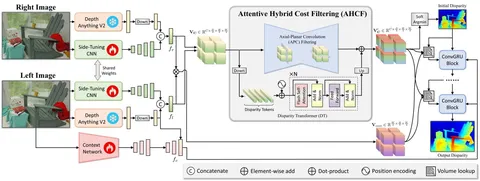
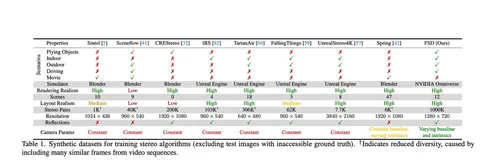

Сегодня разбираем статью от NVIDIA. Исследователи решают задачу определения глубины по двум изображениям, снятым с близко расположенных камер, то есть со стереопары. Камеры смотрят в одном направлении, поэтому каждая 3D-точка попадает приблизительно на одну строку в обеих картинках, но в разных местах. Это позволяет искать соответствия между пикселями одной и той же строки двух изображений, и, используя эти соответствия, восстанавливать глубину сцены.
Определив соответствия между точками на двух изображениях, можно вычислить диспаритет — сдвиг координат пикселя на одной картинке относительно другой. Зная диспаритет, фокусное расстояние и расстояние между оптическими центрами камер, можно пересчитать его в глубину.
Исследователи из NVIDIA говорят, что сейчас нет модели стерео-матчинга, которая бы показывала хорошую zero-shot-генерализацию. Текущие лучшие решения предлагается дообучать на целевой домен.
В других задачах проблему генерализации уже удалось решить за счёт больших данных. Например, Segment Anything обучили на огромном датасете, и модель успешно работает без дообучения. NVIDIA попробовала применить этот же подход к стерео-матчингу. Они собрали фотореалистичный синтетический датасет FSD (картинка 2) из миллиона стереопар, превосходя по объёму и многообразию другие открытые датасеты. Датасет выложен в открытый доступ.
Детали архитектуры
Из левого и правого изображений (картинка 1) извлекаются фичи из Depth Anything, конкатенируются с фичами из отдельной обучаемой свёрточной сети. Из этой пары создаётся feature cost volume — объём фичей, где каждая описывает похожесть пикселя на левой картинке на пиксели в той же строке на правой картинке и корреляционный cost volume, где похожесть пикселей описывается единственным числом.
Такие cost volume’ы уже можно использовать для поиска диспаритета, но в них недостаёт глобального контекста картинок. Чтобы его добавить, применяется операция AHCF (Attentive Hybrid Cost Filtering), особенность которой — использование информации из всего cost volume для получения значений в финальном пикселе выходного тензора; это делается с помощью глобального внимания в transformer-ветви AHCF и с помощью аналога separable-свёрток в свёрточной ветви AHCF. Изменение по ablation даёт 10% улучшения по метрике BP-2: доля пикселей, где ошибка диспаритета больше 2 пикселей (0.221 → 0.197).
Дальше процесс похож на описанный в RAFT-Stereo, но с некоторыми отличиями. В RAFT-Stereo сеть получает на вход hidden state и срез из correlation cost volume. В Foundation Stereo получает срезы из correlation cost volume и feature cost volume.
Таким образом, вход в GRU включает:
— срез cost volume в соответствии с текущей оценкой диспаритета;
— фичи левой картинки из отдельно обучаемой контекстной сети (так делалось и в RAFT-Stereo);
— саму текущую оценку диспаритета.
GRU обновляет внутреннее состояние и предсказывает поправку, итеративно уточняя диспаритет.
Детали обучения
Модель обучается на смеси FSD-датасета и других датасетов с smoothed L1-лоссом и экспоненциально затухающими L1-добавками для оценок на диспаритет с разных итераций GRU-юнита.
Данные из FSD дополнительно фильтруют по BP-2, используя эту же модель, обученную на полном FSD-датасете, а затем обучают ёще раз.
Интересное из ablation study:
— использование Depth Anything фичей как входов в feature cost volume не работает совсем (по метрике BP-2);
— в separable-свертках для фильтрации feature cost volume используется ядро размера 17(!) по размерности диспаритета (но 1 по spatial-размерности);
— добавление FSD-датасета в обучение даёт BP-2 на датасете Middlebury в два раза лучше, чем без него.
Разбор подготовил
CV Time
